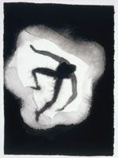
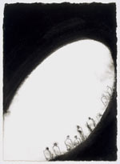
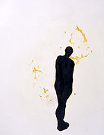

|
|
Antony Gormley
Drawing Antony Gormley was born in London in 1950. Upon completing a degree in Archaeology, Anthropology and the History of Art at Trinity College, Cambridge, he travelled to India, returning three years later to study at the Central School of Art, Goldsmiths College and the Slade School of Art. Over the past twenty years he has revitalised the human figure in sculpture, using his own body as subject, tool and medium. Drawing has also been an essential part of the process whereby he has sought to ‘negotiate a relationship between the body as a thing and the body as a place’. Parallel to yet independent from his sculpture, Gormley’s drawings are highly intuitive and immediate responses to the human condition. They allow for a degree of escape and spontaneity, representing a ‘halfway house between the materiality of sculpture and the mentality of imagination.’ This display of some forty drawings and ten sketchbooks, including examples from the British Museum’s own collection, marks the publication by The British Museum Press of the first comprehensive study of his drawings, with an introduction by Anna Moszynska and sponsored by The Blessing Way Foundation and White Cube. Antony Gormley Drawing - Artist's Statement ‘What is drawing? What does it mean to draw? For me, drawing is a form of thinking. But it is also about the medium: using the intrinsic qualities of substances and liquids: a kind of oracular process that requires tuning in to the behaviour of substances as much as to the behaviour of the unconscious, like reading images in tea leaves, trying to make a map of a path of feeling, a trajectory of thought. It is important to me that the substances I use to draw with are not taken for granted and lamp black, bone black, casein, linseed oil, milk, semen, blood, coffee, chicory, earth, shellac, varnish all come with their own qualities, extracted from the body of the earth, from the body of plants or from living bodies. In their reactivation, these are not innocent partners. The finished drawings depend on light to be seen, but they are mostly made at night, when it is easier to withdraw into the inner realm. The act of drawing is its own experimental field, a journey into the unarmed parts of our internal landscape, or out into the unknown. Drawings have immediacy. In a good session, drawing can be like going for a rugged, physical adventure on a blustery day with changing conditions of light and rain. A day passed without drawing is a day lost.’ Antony Gormley, May 2002 For more information or pictures please call the press office on 020 7323 8583 or email: media@thebritishmuseum.ac.uk
|
 Earth,
1994  Part,
1994  Together
and Apart, 2000
|
||
|
|
|||